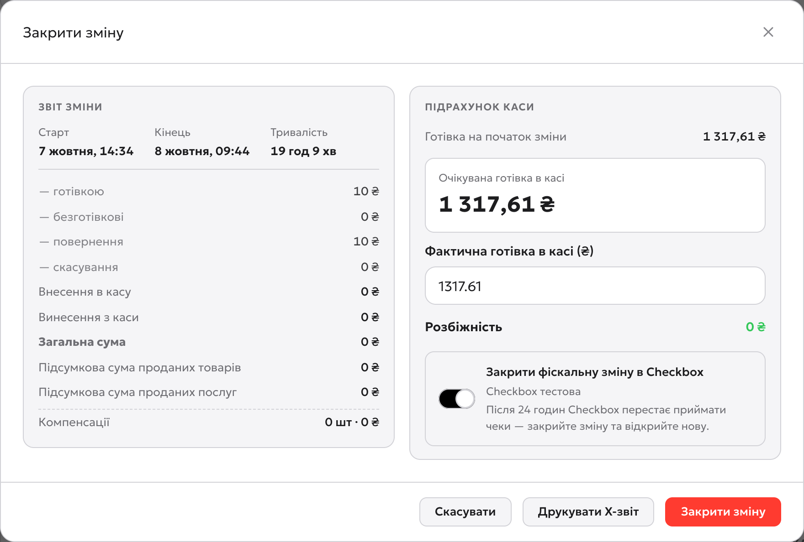

Перед закриттям
Зміна не закриється, поки в клубі є неоплачена сесія післяплати: каса покаже, яка саме. Тож спершу проведіть оплату за всі сесії післяплати й переконайтесь, що в «Черзі замовлень» немає невиданих оплачених замовлень. Гравців, які ще грають з балансу, завершувати не потрібно.
Порахуйте касу
Відкрийте «Зміни» і натисніть «Закрити зміну». Ліворуч звіт зміни: скільки пройшло готівкою, карткою, повернень, внесень і винесень. Праворуч підрахунок каси: система показує, скільки готівки має бути, а ви вводите, скільки є насправді.
- 1«Очікувана готівка в касі»: готівка на початок зміни + готівкові продажі й внесення − повернення й винесення.
- 2«Фактична готівка в касі»: перерахуйте гроші в шухляді й введіть суму.
- 3«Розбіжність»: зелений 0 ₴ означає, що все зійшлося. Інша сума: перерахуйте ще раз і згадайте, чи не брали гроші з каси без «Винесення».
- 4«Закрити фіскальну зміну в Checkbox»: про цей перемикач наступний крок.
- 5«Закрити зміну»: тиснути в самому кінці.

Фіскальна зміна в Checkbox
Зміна в Highlink і фіскальна зміна в Checkbox (податковий бік, з якого друкуються чеки) різні речі. Закрити зміну в Highlink можна кілька разів на день, коли адміністратори міняються. А фіскальну зміну закриває Z-звіт один раз на день, до 24:00. Тому перемикач залежить від того, чи хтось працюватиме після вас.
Увімкнути
Ви останній адміністратор сьогодні: клуб закривається або нічна зміна вже не ваша і почнеться після 00:00. Checkbox закриє фіскальну зміну, сформується Z-звіт.
Лишити вимкненим
Ви передаєте зміну колезі в той самий день (наприклад, о 16:00). Фіскальна зміна лишиться відкритою, і колега продовжить продавати. Закриє її той, хто працює останнім.
Закрийте зміну
Натисніть «Закрити зміну». Зміна закриється, і в «Історії змін» зʼявиться рядок з вашою розбіжністю. Якщо перемикач Checkbox був увімкнений, фіскальна зміна теж закриється, і сформується Z-звіт. Його можна надрукувати ще раз кнопкою «Z-звіт» у рядку зміни в «Історії змін».
Якщо фіскальну зміну вчора не закрили
Вранці при відкритті зміни Highlink побачить, що фіскальна зміна в Checkbox відкрита з попереднього дня, і покаже перемикач «Закрити вчорашню фіскальну зміну й відкрити нову». Лишіть його увімкненим і натисніть «Відкрити зміну»: система зробить Z-звіт за вчора й відкриє нову фіскальну зміну. Зробіть це до першого продажу.
Порядок на кожен день
Щоб каса й Checkbox завжди сходились:
- Вранці: «Відкрити зміну», введіть готівку на початок. Якщо зʼявився перемикач про вчорашню фіскальну зміну, лишіть увімкненим.
- Передача зміни вдень: «Закрити зміну» з вимкненим перемикачем Checkbox, колега відкриває свою.
- Останній за день: «Закрити зміну» з увімкненим перемикачем Checkbox до 24:00.